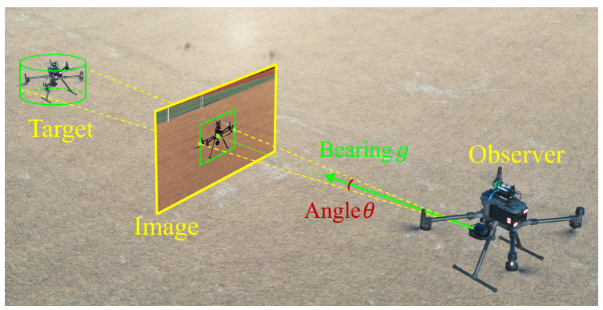
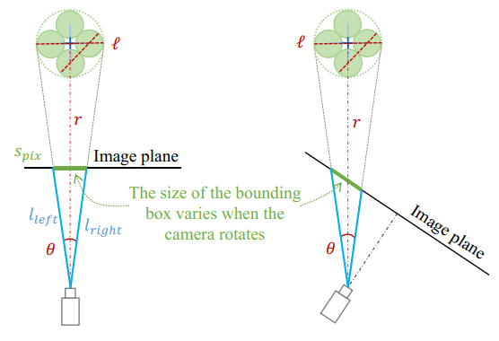
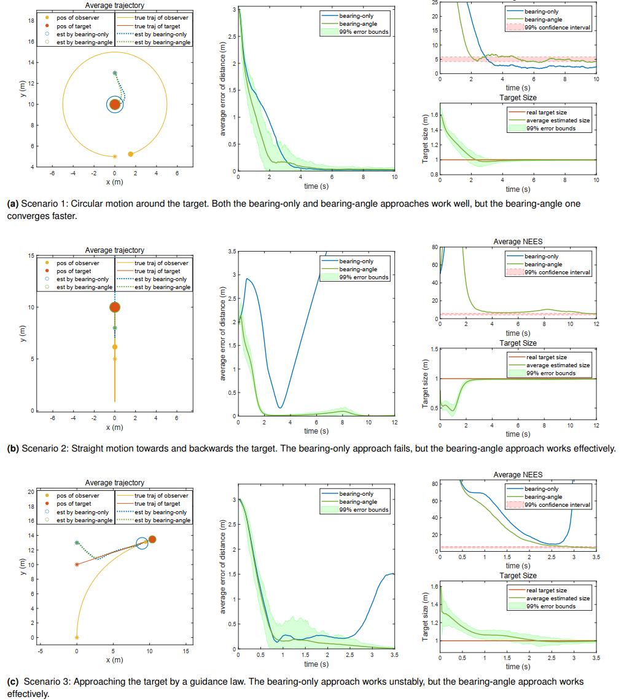
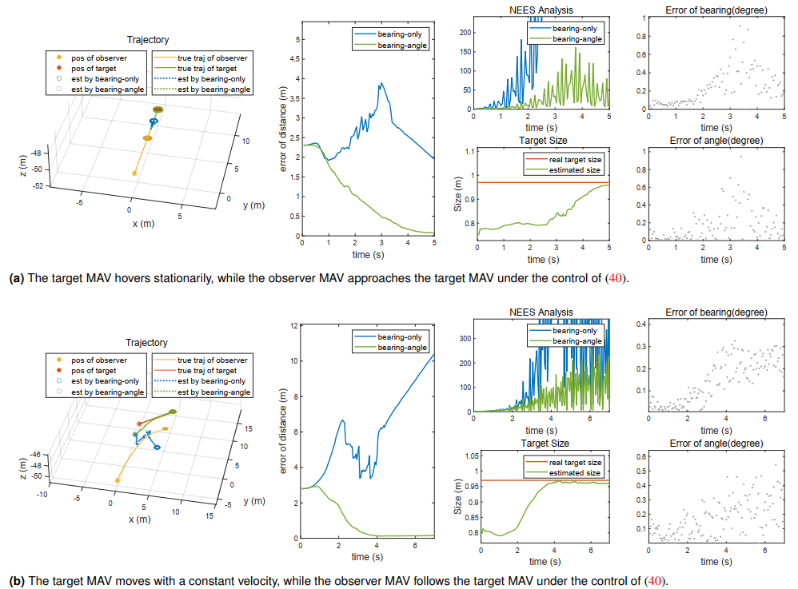
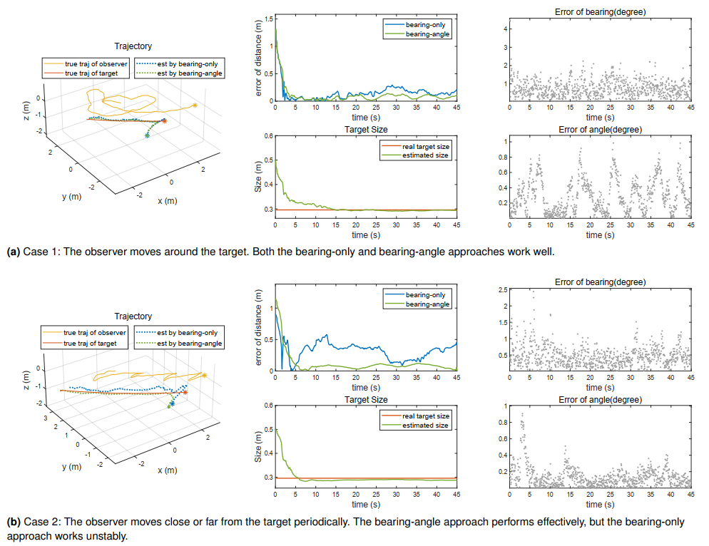
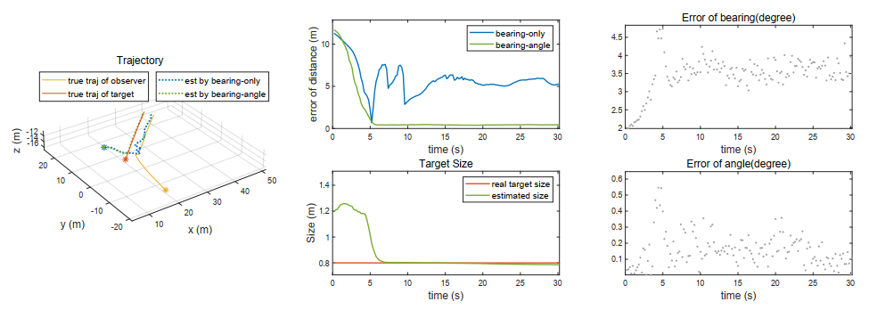

| Title | A Bearing-Angle Approach for Unknown Target Motion Analysis Based on Visual Measurements（基于视觉测量的方位-角度未知目标运动估计方法） |
| Authors | Zian Ning（宁子安，浙江大学）、Yin Zhang（张尹，西湖大学）、Jianan Li（李嘉楠，西湖大学）、Zhang Chen（陈章，清华大学）、Shiyu Zhao（赵世钰，西湖大学，corresponding author） |
| Affiliation | 浙江大学计算机科学与技术学院 / 西湖大学工学院 & 未来产业研究中心 / 清华大学自动化系 |
| Venue | arXiv:2401.17117v1 [cs.RO]，2024年1月30日 | 投稿至某 SAGE 期刊（待发表），共 20 页 |
| DOI / Links | arxiv.org/abs/2401.17117 | 通信作者邮箱：zhaoshiyu@westlake.edu.cn |
| TL;DR | 提出 bearing-angle（方位-角度）目标运动估计新范式——将目标检测框的尺寸信息转换为目标在相机视野中的张角，与传统的方位向量联合估计目标的运动状态（位置、速度、物理尺寸）。核心优势：无需观测器做额外的横向机动即可满足可观测性条件，打破了传统 bearing-only 方法"必须侧向运动"的根本限制。收益零成本——因为检测框是目标检测算法的标准输出，不需要额外传感器或特殊算法。 |
| Inspiration Source | → What Insight It Inspired | Type |
|---|---|---|
| 目标检测算法普遍输出 bounding box（YOLO、Faster R-CNN 等），其尺寸信息在传统 bearing-only 框架中被完全丢弃 | → 将 bounding box 的尺寸转换为张角（subtended angle）——利用针孔相机模型和余弦定理，宽度/高度 → 张角。张角 = 2 arctan(l/2r)，其中 l 为物理尺寸、r 为距离——包含了目标距离的隐式信息 | 架构 |
| 直接使用 bounding box 尺寸的问题：尺寸随相机旋转而变化（同一个目标，不同视角下的 bounding box 宽度不同） | → 用张角替代原始尺寸——因为张角只取决于目标物理尺寸和距离，与相机朝向无关（Fig. 2）。这一洞察避开了 Griffin & Corso (2021) 中"相机只能平移不能旋转"的强假设 | 方法 |
| bearing-only 可观测性条件要求观测器做横向机动（Fogel & Gavish, 1988），与追捕任务的期望运动矛盾 | → 证明 bearing-angle 的充要可观测性条件仅为"观测器的运动阶数高于目标"——不再要求该高阶运动正交于方位向量。沿视线方向的加减速即可使系统可观，无需侧向机动 | 数学 |
| 伪线性卡尔曼滤波器（Pseudo-Linear KF）在 bearing-only 中已有应用（Aidala & Nardone, 1982），但仅处理方位测量 | → 将方位和角度两个非线性测量方程同时伪线性化——方位通过正交投影矩阵 Pg 线性化，角度通过乘以 r 变换后线性化。状态向量从 6 维扩展为 7 维（增加目标物理尺寸 l），在统一的 KF 框架中处理 | 策略 |
一句话：检测框不只给方位，还给出目标张角；把两者一起伪线性化后送进卡尔曼滤波，就同时得到目标的位置、速度和一个未知的物理尺寸。两图中紫色 = 本文创新：测量构造（①）与增广状态伪线性滤波（②）。
flowchart LR
subgraph IN["机载感知"]
CAM["单目相机
Monocular"]
ODO["自定位
Vicon · RTK"]
end
subgraph MEAS["测量构造（本文创新①）"]
DET["目标检测
tiny-YOLOv4"]
BA["方位与张角
Bearing-Angle"]
end
subgraph EST["伪线性估计（本文创新②）"]
PL["伪线性化
Pseudo-Linear"]
KF["卡尔曼滤波
Kalman"]
end
subgraph OUT["输出"]
RES["状态输出
States"]
end
CAM -->|"图像 30 fps"| DET
DET -->|"边界框"| BA
ODO -->|"相机位姿"| BA
BA -->|"6 维测量"| PL
PL -->|"线性方程"| KF
KF -->|"最优估计"| RES
classDef sensor fill:#fef7ed,stroke:#f59e0b,stroke-width:2px,color:#92400e
classDef novel fill:#f0ebfd,stroke:#8b5cf6,stroke-width:3px,color:#6d28d9
class CAM,ODO,DET sensor
class BA,PL,KF novel
张角对相机旋转不变，因此不必再假设“相机只能平移不能旋转”；状态由 6 维扩到 7 维（多一个未知尺寸 ℓ），测量 6 维，用伪逆防止秩亏。整条链路零额外成本——边界框本来就是检测器的标准输出。
flowchart LR IMG["相机图像
Image"] DET["目标检测
tiny-YOLOv4"] MEAS["方位与张角
Bearing-Angle"] PL["伪线性化
Pseudo-Linear"] KF["伪线性卡尔曼
Kalman"] GUI["追逃制导
Pursuit"] UAV["观测器 MAV
Observer"] IMG -->|"30 fps"| DET DET -->|"边界框"| MEAS MEAS -->|"非线性测量"| PL PL -->|"线性方程"| KF KF -->|"位置·速度·尺寸"| GUI GUI -->|"期望速度"| UAV UAV -.->|"新视角"| IMG UAV -.->|"自身位姿"| MEAS classDef vis fill:#fef7ed,stroke:#f59e0b,stroke-width:2px,color:#92400e classDef novel fill:#f0ebfd,stroke:#8b5cf6,stroke-width:3px,color:#6d28d9 class IMG,DET vis class MEAS,PL,KF novel
闭环的意义全在可观测性：观测器只需运动阶数高于目标（例如沿视线加减速），不必做正交于方位向量的横向机动——这正是传统 bearing-only 方法的死穴。导引“沿视线接近”把新视角喂回测量构造，估计随即收敛。
| 类别 | 内容 | 维度/说明 |
|---|---|---|
| 输入 | 单目相机图像序列 + 观测器自身位姿（位置 + 相机朝向） | 图像 640x480@30fps（室内）/ 1920x1080@15fps（室外）；位姿由 Vicon（室内 1mm 精度）/ RTK GPS（室外 1cm 精度）提供 |
| 输出 | 目标三维位置 pT ∈ R3，目标三维速度 vT ∈ R3，目标物理尺寸 l ∈ R+ | 7 维增广状态向量，50 Hz 更新率 |
| 目标 | 在不依赖观测器横向机动的情况下，仅用标准目标检测的 bounding box 信息，实现稳定、准确的目标运动估计——在 bearing-only 失效的场景下仍有效 | 收敛时间 <10 s，距离误差在 AirSim 实验中 <2 m（10 m 距离下），MAV 追踪实验 <5 m（20-50 m 距离下） |
这是一个视觉状态估计 + 可观测性理论问题。与纯算法或硬件创新不同，本文的贡献在于重新审视了一个被忽略的信息源（bounding box 尺寸），并用严格的数学工具（Kalman 可观测性矩阵、伪线性滤波、多项式运动模型）证明了这个信息源的价值。应用场景：空中目标追捕（aerial target pursuit）——观测 MAV 用机载单目相机检测并追踪另一架 MAV。平台：单目相机 + 机载计算机（Manifold 2G）/ 地面站。
⚠ 表头用英文，正文用中文
| Prior Method | Core Idea | Why It Fails |
|---|---|---|
| Bearing-Only Target Motion Estimation（经典方位测量方法，Fogel & Gavish 1988; He et al. 2019; Li et al. 2023） | 仅使用目标检测框中心点计算方位向量 g，通过观测器的横向机动从多视角三角化目标位置。可使用 EKF、伪线性 KF 或粒子滤波实现 | 可观测性条件严格：要求观测器做相对于方位向量的正交方向机动。在追捕/跟随任务中，期望运动恰是沿视线方向——与可观测性条件直接冲突。无横向机动 → 系统不可观 → 估计发散（Fig. 4b, 4c, 8, 11b, 13 均有验证）。即使使用螺旋引导律（Li et al. 2023）优化可观测性，也需要观测器做额外的横向周期性运动 |
| Depth from Camera Motion and Object Detection（Griffin & Corso 2021, CVPR） | 利用 bounding box 尺寸+多视角观测来估计静止目标的深度。当前最接近本文的工作 | 两个强假设：（1）目标必须是静止的——无法处理运动目标（本文的核心场景就是运动目标）；（2）相机只能平移不能旋转——在真实飞行中相机不可避免地有旋转（姿态变化）。这两个假设在实际 MAV 任务中几乎不可能满足 |
| Marker-Less MAV Detection and Localization（Vrba & Saska 2020, RA-L） | 利用 CNN 检测 MAV + bounding box 尺寸来估计目标位置。也使用了 bounding box 的尺寸信息 | 需要目标尺寸的先验知识——在实际对抗场景中（如追踪一架未知型号的无人机），目标的物理尺寸不可知。本文不需要任何先验，l 是在线估计的 |
| CubeSLAM / Dynamic SLAM（Yang & Scherer 2019; Qiu et al. 2019） | 在 SLAM 中同时估计相机姿态和动态目标的三维包围盒，通过多视角观测恢复尺度因子 | 需要从 2D bounding box 中进一步提取 3D bounding box 或充足的特征点——这在远距离小目标场景（目标仅占数十像素）中不可靠。计算开销更大。本文不需要 3D 检测或特征提取，仅需 2D bounding box |
| Bearing-Only Trajectory Triangulation（Avidan & Shashua 2000） | 假设目标轨迹形状已知（如直线、多项式），通过拟合参数化轨迹与方位射线的交点来估计位置 | 需要轨迹形状的先验假设——在很多应用中目标轨迹复杂且未知。本文不需要任何轨迹形状的假设，目标运动被建模为通用的噪声驱动双积分器 |
本文的核心方法是一条完整的测量建模 → 伪线性化 → Kalman 滤波 → 可观测性分析链条。不是纯算法创新，而是对一个被忽视信息源（bounding box 尺寸）的系统性"挖掘"——从物理含义（为什么张角比尺寸好）、数学模型（如何将尺寸变张角）、滤波器设计（如何联合方位和角度）、到理论保证（可观测性条件）。以下逐一拆解。
| 参数 | 取值 | 含义 | 为什么取这个值 |
|---|---|---|---|
| 状态维度 | 7（位置 3 + 速度 3 + 尺寸 1） | 增广状态向量维度 | 比 bearing-only 的 6 维多了 l——这是引入角度测量必须付出的代价。不包含加速度是因为估计加速度要求观测器有更高阶运动（jerk != 0），一般难以保证 |
| 测量维度 | 6（伪线性方位 3 + 伪线性角度 3） | 有效测量数 | 原始测量是 3 维方位 + 1 维角度 = 4 维；但伪线性化后方位提供 3 个有效约束（Pg 是 3x3 但 rank=2——正交投影丢失了沿 g 方向的信息），角度提供 3 个（乘以 r 扩展了维度） |
| 过程噪声 | sigmav = 10-3, sigmal = 10-4 | 目标速度和尺寸的过程噪声标准差 | sigmal 很小 = l 近似不变。当 l 确实时变但缓慢时（如多旋翼正视/侧视轴距略有不同），bearing-angle 方法退化为 bearing-only 性能——额外信息被用于追踪时变 l 而非改善可观性 |
| 测量噪声 | sigmag = 0.01, sigmaw = 0.01 | 方位和角度的测量噪声标准差 | 由 AirSim 和真实实验的实际测量噪声统计确定。注意视觉检测器的输出并非严格高斯噪声——噪声与距离反相关（距离越近，bounding box 越大，中心点和尺寸的像素抖动越小） |
| 系统更新率 | 50 Hz | Kalman 滤波器更新频率 | 高于典型视觉检测帧率（15-30 fps），但在仿真中直接使用 50 Hz 的 measurement 序列。真实实验中 Kalman 仅在测量到达时更新 |
| 初始协方差 | P(t0) = 0.1·I | 初始状态估计的不确定性 | 相对保守的初值——意味着算法对初始猜测误差不敏感（在 Monte Carlo 仿真中验证） |
理解 bearing-angle 方法需要掌握四个关键基础原理：针孔相机几何与张角计算、正交投影矩阵与伪线性化、增广状态 Kalman 滤波、可观测性的两种分析方法。以下逐一拆解。
EKF 在 bearing-only 问题中发散的根本原因是线性化点的不准确（Aidala 1979）：当初始估计误差较大时，EKF 对非线性测量方程的 Jacobian 线性化会引入系统性偏差，导致协方差估计过于乐观（NEES 发散）。伪线性化通过将测量方程代数变换为类线性形式，避免了显式的 Jacobian 线性化——代价是噪声模型中引入了测量矩阵与噪声的相关性（带来有偏估计），但实践证明偏差在可接受范围内（Aidala & Nardone 1982 证明了速度估计无偏，位置估计偏差可通过观测器机动消除）。
步骤 1：原始测量方程 ĝ = (pT - po)/r + mu。
步骤 2：两边左乘 r·Pĝ → Pĝ(pT - po) + r·Pĝ·mu = 0（因为 Pĝ·ĝ = 0）。
步骤 3：整理为 Pĝ·po = Pĝ·pT + r·Pĝ·mu——左端已知，右端 pT 线性。丢失的信息：沿 ĝ 方向的距离——但被 theta 补充。
步骤 1：原始测量方程 thetâ = l/r + w。
步骤 2：两边乘以 r·ĝ → thetâ·r·ĝ = l·ĝ + w·r·ĝ。
步骤 3：代入 r·ĝ = pT - po + r·mu → thetâ·po = thetâ·pT - l·ĝ + r(thetâ·mu - w·ĝ)——左端已知，右端 pT 和 l 线性。
l 的动态特性决定了 bearing-angle 方法的性能边界。论文将其分为三种情况：
| l 的动态类型 | 示例 | 方法性能 |
|---|---|---|
| 1) l 不变（理想情况） | 目标为球体（直径不变）、圆柱体（从侧面看直径不变） | 角度测量额外信息完全用于改善可观测性——这是论文理论分析的基础假设，也是方法的最佳工作区 |
| 2) l 缓慢时变 | 多旋翼无人机从不同角度观察时轴距略有变化；自动驾驶场景中车辆高度从侧面看基本不变 | 在小时间窗口内可近似为恒定——方法仍有效，可观测性改善仍然存在。但 sigmal 需要设置为 0（假设不变），使得 l 的估计值收敛到真实值的均值 |
| 3) l 快速时变 | 无人机相对于地面车辆做高动态运动，目标在任意维度上的视角都快速变化 | 角度测量的额外信息被用于追踪时变 l 而非改善可观测性——方法退化为 bearing-only 的性能。此时需要额外的姿态信息（如 3D bounding box 提供目标朝向） |
📷 论文原图截图。图片保存至 figures/ 子目录。

📷 请将截图保存为figures/fig1.png本图展示了：论文的核心概念图——观测 MAV 搭载单目相机观测另一架飞行中的目标 MAV。目标检测算法（如 YOLO）输出一个包围目标的 2D bounding box，其中心点用于计算方位向量 g（从相机指向目标），其宽度（或高度）通过针孔相机模型和余弦定理转换为目标张角 theta。

📷 请将截图保存为figures/fig2.png本图展示了：当相机绕光心旋转时，目标在图像平面上的 bounding box 宽度发生变化（左图中红色框比右图窄），但目标在三维空间中张成的角度 theta 保持不变。这个性质至关重要——它使得角度测量成为相机姿态的"不变量"，可以直接用于状态估计而无需进行复杂的姿态补偿或坐标变换。

📷 请将截图保存为figures/fig4.png本图展示了：三种不同场景下 bearing-only 和 bearing-angle 的估计性能对比。（a）观测器绕目标转圈——两种方法都有效但 bearing-angle 收敛更快；（b）观测器沿视线往复运动——bearing-only 完全发散，bearing-angle 成功收敛（最核心验证场景）；（c）PNG 引导律接近目标——bearing-only 弱可观测导致不稳定，bearing-angle 在碰撞前成功收敛。

📷 请将截图保存为figures/fig8.png本图展示了：在 AirSim 高保真仿真环境中的实验结果。（a）目标悬停+观测器沿直线接近；（b）目标匀速运动+观测器跟随。检测噪声为非高斯（深度学习检测器的固有特性），与距离反相关。

📷 请将截图保存为figures/fig11.png本图展示了：两个真实实验场景。（a）相机绕机器人转圈——方位变化充分，两种方法都有效；（b）相机沿机器人轨迹往复运动——方位几乎不变（类似仿真场景 2），bearing-only 不稳定，bearing-angle 表现稳定。距离估计误差约 0.2-0.5 m（1.5 m 距离）。

📷 请将截图保存为figures/fig13.png本图展示了：最具说服力的实验——两架 DJI M300 四旋翼（对角线 895 mm，7.4 kg）在室外进行 MAV 追踪。目标匀速飞行，观测 MAV 用控制器跟踪到 3 m 期望距离。过程约 30 秒：前 8 秒接近阶段（方位变化大），后 20 秒稳定跟随阶段（方位几乎不变）。
| 数据问题 | 潜在困难 | 严重程度 |
|---|---|---|
| 目标检测失败（漏检/误检） | 测量完全中断 → Kalman 只能预测不能更新 → 估计误差随时间增长。误检产生错误的方位和角度测量，导致估计跳变 | ★★★★★ |
| l 快速时变（目标大角度旋转） | 方法退化为 bearing-only——在需要横向机动的场景中同样失效。论文未测试极端情况（如目标以 10 rad/s 旋转） | ★★★★ |
| 相机自定位漂移（VIO 累积误差） | g 的计算直接依赖 Rcw 和 po。自定位误差 → g 的方向误差 → 估计结果偏差。theta 不受影响（对旋转不变），但 r 的估计会受部分影响 | ★★★★ |
| 小目标/远距离场景（bounding box 仅几像素） | bounding box 中心点的像素抖动（1-2 像素）对应大的角度误差。theta ≈ l / r 在 r >> l 时精度更高，但此时 l 的相对估计误差也会增大 | ★★★ |
| 环境光照剧烈变化 | 检测器在极端光照下性能下降 → bounding box 位置/尺寸抖动增大 → 测量噪声增加。论文的实验条件相对友好 | ★★★ |
| 参考文献 | 为什么重要 |
|---|---|
| Fogel & Gavish (1988) — Nth-order dynamics target observability from angle measurements. IEEE T-AES 24(3): 305-308 | bearing-only 可观测性分析的经典文献——本文的 Theorem 1 是对其结论的推广（从 bearing-only 到 bearing-angle）。理解这篇才能理解本文理论贡献的分量 |
| Li et al. (2023) — Three-dimensional bearing-only target following via observability-enhanced helical guidance. IEEE T-RO 39(2): 1509-1526 | 同组的前序工作——用螺旋引导律优化 bearing-only 的可观测性。本文正是为了解决螺旋引导"不情愿的横向机动"问题而提出 bearing-angle。两篇一起读可以看到研究脉络的演进 |
| Griffin & Corso (2021) — Depth from camera motion and object detection. CVPR 2021 | 最接近本文的前驱工作——也利用了 bounding box 尺寸信息，但限于静止目标+相机只平移。本文在"目标运动+相机可旋转"两个维度上突破 |
| Aidala & Nardone (1982) — Biased estimation properties of the pseudolinear tracking filter. IEEE T-AES 18(4): 432-441 | 伪线性 Kalman 滤波器的偏差分析——证明了速度估计无偏、位置估计偏差可通过机动消除。本文直接继承了这个结论 |
| Zhao & Zelazo (2019) — Bearing rigidity theory and its applications. IEEE Control Systems Magazine 39(2): 66-83 | bearing 刚性理论的综述——Pg 投影矩阵的性质和作用在其中被系统阐述。如果要在 bearing 相关问题上做深入研究，这是必读的数学基础 |
对象：A Bearing-Angle Approach for Unknown Target Motion Analysis Based on Visual Measurements（Ning et al.，arXiv:2401.17117）全文 20 页。公式范围：全部 40 个编号公式（(1)–(40)）＋ 6 处无编号关键式（$g$、$\theta$ 余弦定理式、$P_{\hat g}$、$\Sigma_\nu$、Kalman 五步、$\bar A$ 展开式）＋ §7–§9 全部仿真/实验参数。方法：① 从针孔相机几何、双积分器运动学、投影算子代数、秩理论、差分学（Milne-Thomson）等第一性原理独立重推每个公式，写明每步依据；② 字形级核实原文：本会话模型不能直接读页面图像，改用 PyMuPDF 对 PDF 做 rawdict 逐字形提取（含坐标），等效"照页面逐字符核对"，引用的原文 LaTeX 均以此为准；③ 把论文参数代入数值核算；④ 明确标出印刷错误、符号冲突、推导跳跃与数值失实（§12.19 问题清单，共 12 条），绝不替论文"圆场"。
| 公式 | 内容 | 与独立重推/数值核算对照的结论 |
|---|---|---|
| (D1)(D2) 无编号 | 方位向量 $g=R_w^cP_{cam}^{-1}q_{pix}/\|R_w^cP_{cam}^{-1}q_{pix}\|$；张角 $\theta=\arccos\frac{l_{left}^2+l_{right}^2-s_{pix}^2}{2l_{left}l_{right}}$ | ✅ 正确。两者均为针孔模型＋余弦定理的标准结论；$\theta$ 对相机旋转不变是本文核心卖点 |
| (1)(2)(3) | 7 维状态、离散双积分器 $F$、过程噪声 $\Sigma_q$ | ✅ 正确。$F^j$ 归纳、维数、噪声注入位置均核对无误 |
| (4a)(4b) | $g=(p_T-p_o)/r$；$\theta=2\arctan\frac{\ell}{2r}\approx\frac\ell r$ | ⚠️ 公式本身正确（Taylor 展开逐项一致），但文中 「$r>3\ell$ 时误差 < 0.08%」的数值声明错误：实算为 0.919%（要 <0.08% 需 $r\gtrsim10.2\ell$，见 §12.4） |
| (5)–(9) | 旋转噪声模型→加性噪声、两类测量方程 | ✅ 正确。$R(\eta,\epsilon)g$ 与加性噪声 $\mu$ 的对应关系已逐步验证 |
| (10)(11)(12) | 伪线性化：投影矩阵 $P_{\hat g}$ 技巧、乘 $r\hat g$ 技巧 | ✅ 三步代数恒等全部重推通过；$P_{\hat g}$ 的性质（对称、幂等、$P_{\hat g}\hat g=0$、秩 2）已证明 |
| (13)(14)(15)+Σν | 紧凑形式 $z=Hx+\nu$、噪声协方差 | ✅ 正确。$\Sigma_\nu$ 的 6×6 显式块展开已独立算出（见 §12.7），与 $E\,\mathrm{diag}(\sigma_\mu^2I_3,\sigma_w^2)E^T$ 一致 |
| KF 五步（无编号） | 预测/校正、伪逆增益 | ✅ 标准形式正确；$(HP^-H^T+\Sigma_\nu)^\dagger$ 用伪逆是因为 $P_{\hat g}$ 秩 2 使 $H$ 永远行相关（见 §12.8 的秩论证） |
| (16)(17) | 可观测性矩阵 $Q$ 与行变换约化 | ✅ 结果正确；但 (17) 的约化在 Case 2（观测器变速）下含一阶近似（精确约化出现的是平均速度，论文未说明，见 §12.9 与问题 P8） |
| (18)–(21) | Case 1：$\mathrm{rank}=6$、零空间与不可观测模式 | ✅ 正确。已用"规范（gauge）变换"证明该模式对全部测量序列严格不变（§12.10） |
| (22)(23) | Case 2：采样加速度、$\mathrm{rank}=7$ | ❌ (22) 中间两步印刷符号错误（应为 $-\delta v(t_i)+\delta v(t_{i-1})$，印成 $-\delta v(t_i)-\delta v(t_{i-1})$，字形级核实）；结论（$\mathrm{rank}\,Q=7\iff\exists i\ge3: a_o(t_i)\ne0$）用正确符号重推依然成立（§12.11） |
| (24)–(30) | 多项式运动模型、线性方程 $A(t)X=h(t)$ | ⚠️ 结构正确；(26) 有两处笔误：$s_i=d_i-c_i$ 应为 $s_i=b_i-c_i$；$+h(t)$ 与 $s:=p_T-p_o$ 定义符号矛盾（应为 $-h(t)$）。不影响定理结论（§12.13，问题 P3/P4） |
| (31)–(35) Theorem 1 | 充要条件 $h(t)\ne0$（观测器阶数高于目标） | ✅ 证明链条 $\bar A$ 秩 ⟺ $\rho^{(i)}\ne0$ ⟺ $h^{(i)}\ne0$ ⟺ $h\ne0$ 已逐环重推；关键一步"$h$ 无 $\le n$ 次项 ⇒ $h\ne0\iff h^{(n+1)}\not\equiv0$"补证 |
| (36)–(38) Theorem 2 | 至少 $n+2$ 个离散观测 | ✅ 正确（必要性 $3N\ge3n+4$；充分性用前向差分表 $\Delta^m(t^m)=m!$ 重推）；证明是"小 $\delta t$ 近似"式论证且未讨论退化采样配置（§12.15，问题 P9） |
| (39) | 平均 NEES | ✅ 标准 $\chi^2$ 一致性统计量；$E[\bar\epsilon]=7$、99% 区间 $[6.0,8.0]$ 与 Fig. 4 一致（§12.16） |
| (40) | 接近/跟随控制律 $v_o^{cmd}=v_T+k_{track}\frac{r^2-r_d^2}{r^2}g$ | ✅ 正确；平衡点 $r=r_d$ 渐近稳定、$r>r_d$ 收敛速度 $\approx k_{track}$，已解析验证（§12.17）。依赖目标真值——论文已声明仅用于离线数据采集 |
| 仿真/实验参数 | §7–§9 全部数值（噪声、初值、几何量） | ⚠️ 发现 1 类符号笔误（$\hat p_o,\hat v_o$ 实为 $\hat p_T,\hat v_T$，共 3 处，问题 P7）；其余数值（$\theta=0.2\,\mathrm{rad}$、$\omega=0.6\,\mathrm{rad/s}$、$r(t{=}2s){=}1\,\mathrm{m}$、$\ell=0.295/0.895\,\mathrm{m}$ 与图像一致）全部核算通过（§12.18） |
论文在 §3–§4 定义的核心量如下（量纲为本文补注；论文通篇 SI 单位）：
| 符号 | 含义 | 量纲/单位 | 文中取值 |
|---|---|---|---|
| $p_T,\,v_T$ | 目标位置、速度（世界系，3 维） | m、m/s | 场景相关（§12.18） |
| $p_o$ | 观测器（相机）位置，假定已知（RTK GPS / VIO 自定位） | m | 场景相关 |
| $r=\|p_T-p_o\|$ | 目标-观测器距离 | m | — |
| $g,\ \theta$ | 单位方位向量（$p_o\to p_T$）；目标张角 | —、rad | $\|g\|=1$；$\theta\in(0,\pi/2)$ |
| $\ell$ | 目标在与视线正交方向上的物理尺寸（状态之一） | m | $\ell=1$（数值仿真）；0.295 m（实验 1 机器人直径）；≈0.895 m（实验 2 M300 对角线） |
| $\hat g,\ \hat\theta;\ \mu,\ w$ | 含噪测量；方位/角度噪声 | —/rad | $\mu\sim N(0,\sigma_\mu^2I_3)$，$\sigma_\mu=0.01$；$w\sim N(0,\sigma_w^2)$，$\sigma_w=0.01$ |
| $x=[p_T^T,v_T^T,\ell]^T$ | 7 维状态向量 | 混合 | $x\in\mathbb R^7$ |
| $F,\ \Sigma_q$ | 状态转移矩阵、过程噪声协方差 | —、混合 | 见式 (2)(3) |
| $\delta t$ | 采样周期 | s | $1/50\,\mathrm{Hz}=0.02\,\mathrm{s}$ |
| $\sigma_v,\ \sigma_\ell$ | 速度、尺寸的过程噪声标准差 | m/s、m | $10^{-3},\ 10^{-4}$（§8.4 另用 $0.01$） |
| $q_{pix},P_{cam},R_w^c,f,\alpha,s_{pix}$ | 像素齐次坐标、内参、外参旋转、焦距、像素尺寸、框尺寸（像素） | pixel 等 | 见 (D1)(D2) |
| $P_{\hat g}$ | 正交投影矩阵 $I_3-\hat g\hat g^T$ | — | 秩 2、对称、幂等（§12.6 证明） |
| $z,H,\nu,E,\Sigma_\nu$ | 伪线性测量向量/矩阵/噪声/协方差 | — | 式 (13)–(15) |
| $Q,\ \delta v$ | 可观测性矩阵（6k×7）、相对速度 $v_T-v_o$ | —、m/s | 式 (16)(17) |
| $s(t),\ \rho(t)$ | 相对位置多项式、$-\!g/\theta$ | m、rad⁻¹ | 式 (26)(30) |
| $k_{track},\ r_d$ | 跟踪增益、期望间距 | s⁻¹、m | $3,\ 3$ |
符号冲突预警（本文发现，论文未处理）：① 可观测性矩阵 $Q$ 与过程噪声 $q(t_k)$、像素向量 $q_{pix}$ 撞字母（大小写区分，可接受）；② 相对速度 $\delta v$ 与采样周期 $\delta t$ 共享 $\delta$（无实质冲突）；③ 仿真章节把目标状态的初始估计写成 $\hat p_o,\hat v_o$，实为 $\hat p_T,\hat v_T$——见问题 P7。
逐符号：$q_{pix}$ 是框中心像素的齐次坐标；$P_{cam}$ 是 3×3 相机内参矩阵；$R_w^c$ 是相机系到世界系的旋转；分子先"反投影"再"旋到世界系"，分母归一化成单位向量。
第一性原理重推：针孔模型中，像素 $(x_{pix},y_{pix})$ 对应的视线方向在相机系内是齐次向量 $P_{cam}^{-1}[x_{pix},y_{pix},1]^T$（零畸变模型下即 $[(x_{pix}-c_x)\alpha/f,\ (y_{pix}-c_y)\alpha/f,\ 1]^T$，$c_x,c_y$ 为主点）；乘以 $R_w^c$ 得世界系方向，除以范数得单位向量。前提假设：观测器（相机）位姿已知（RTK GPS 或 VIO），$p_o$ 与 $R_w^c$ 不参与滤波估计——务必记住。
物理直觉：框中心只给"方向"不给"距离"——bearing-only 的全部困难源于此；框的尺寸恰好携带距离信息，即下一式 (D2) 要开采的。
交叉验证：与式 (4a) 自洽——(4a) 是 $g$ 的几何定义，(D1) 是 $g$ 的计算方法。与 Fig. 1 示意图一致。
逐符号：$l_{left},l_{right}$ 是光心（图像主点，纵深取主距 $f/\alpha$ 像素）到框左、右边中点的像素距离；$s_{pix}$ 是框宽；$\theta$ 是两条视线在光心处的夹角。
第一性原理重推（两步）：第 1 步（两点到光心的像素距离）。以主点 $(i_{width}/2,i_{height}/2)$ 为原点，左边中点 $(x_{pix}-s_{pix}/2,\,y_{pix})$ 的偏移为 $\big((x_{pix}-s_{pix}/2)-i_{width}/2,\ y_{pix}-i_{height}/2\big)$；由 $\delta x=|x_{pix}-i_{width}/2|$ 知横向偏移 $x_{pix}-i_{width}/2=\pm\delta x$，平方后符号消失，得 $(\delta x-s_{pix}/2)^2$（左）与 $(\delta x+s_{pix}/2)^2$（右）；纵深偏移为主距 $f/\alpha$（焦距除以像素尺寸，单位 pixel）。勾股定理即得 $l_{left},l_{right}$。第 2 步（余弦定理）。三角形三边 $l_{left},l_{right},s_{pix}$，$s_{pix}$ 的对角即 $\theta$：$s_{pix}^2=l_{left}^2+l_{right}^2-2l_{left}l_{right}\cos\theta$，解出 $\cos\theta$ 取反余弦即 (D2)。
为什么用张角而不用像素尺寸（核心动机）：$s_{pix}$ 随相机旋转变化（同目标同距离，正对与斜视的框宽不同，Fig. 2），而 $\theta$ 只依赖"物理尺寸 $\ell$ 与距离 $r$"这两个旋转不变量，故对相机姿态变化不变——这是论文绕开 Griffin & Corso (2021)"相机只能平移"假设的关键。
交叉验证：(D2) 是精确平面几何，无近似；与 (4b) 的衔接（$\theta$ 如何由 $\ell,r$ 决定）由式 (4b) 完成。
逐符号：$x=[p_T^T,v_T^T,\ell]^T\in\mathbb R^7$；$F$ 见式 (2)；$q(t_k)\sim N(0,\Sigma_q)$ 是零均值过程噪声，$\Sigma_q$ 见式 (3)。
模型选择的物理解读：$F$ 的块结构使 $p_T(t_{k+1})=p_T(t_k)+\delta t\,v_T(t_k)$、$v_T(t_{k+1})=v_T(t_k)$、$\ell(t_{k+1})=\ell(t_k)$，即"位置按当前速度匀速外推，速度受随机游走驱动"——这就是离散白噪声加速度（DWNA）双积分器，是无目标先验时对任意运动的一阶近似。目标物理尺寸 $\ell$ 作为第 7 维状态纳入，其动态是带噪声的常值（慢变）模型。
为什么状态里没有加速度（论文正文的论证，此处严格化）：由 §12.14 的 Theorem 1，要估计目标的 $n$ 阶运动，观测器必须有 $>n$ 阶运动。若把加速度放进状态（$n=2$），观测器就需非零 jerk——很多任务做不到；因此"只估计位置+速度"最稳妥。数学上：状态维度越高，$\bar A$ 列越多，需要的独立约束越多。
交叉验证：与式 (16) 的 $H(t_i)F^{i-1}$ 结构自洽（§12.9 逐项核对）。
重推 $F^j$（后文可观测性分析的关键）：把 $F$ 写成块形式 $F=\begin{bmatrix}I&\delta tI&0\\0&I&0\\0&0&1\end{bmatrix}$。归纳法：设 $F^j=\begin{bmatrix}I&j\,\delta t\,I&0\\0&I&0\\0&0&1\end{bmatrix}$，则
$$F^{j+1}=F^jF=\begin{bmatrix}I&j\delta tI&0\\0&I&0\\0&0&1\end{bmatrix}\begin{bmatrix}I&\delta tI&0\\0&I&0\\0&0&1\end{bmatrix}=\begin{bmatrix}I&(j+1)\delta tI&0\\0&I&0\\0&0&1\end{bmatrix}$$块乘法逐项：左上 $I\cdot I=I$；右上 $I\cdot\delta tI+j\delta tI\cdot I=(j+1)\delta tI$；第 3 行第 3 列 $1\cdot1=1$。基 $F^1$ 成立，归纳完成：$F^j$ 就是把位置块右上的 $j\delta tI$ 逐步累加，对应"$j$ 步匀速外推"。这正是式 (16) 展开后出现 $(i-1)\delta t P_g(t_i)$、$(i-1)\delta t\,\theta(t_i)I$ 的来源（§12.9 核验）。
交叉验证：与论文 (16) 之后的 $Q$ 展开矩阵（每行含 $(i-1)\delta t$ 因子）完全一致。
逐符号：$\sigma_v\in\mathbb R$、$\sigma_\ell\in\mathbb R$ 分别是目标速度与尺寸的过程噪声标准差（§7 取 $\sigma_v=10^{-3}\,\mathrm{m/s}$、$\sigma_\ell=10^{-4}\,\mathrm{m}$）。
结构解读（为什么位置前 3 个对角元是 0）：噪声只注入"速度"与"尺寸"，位置没有直接过程噪声——位置的随机性由速度噪声经 $F$ 的 $\delta t$ 耦合产生（一步后位置方差 $\approx\sigma_v^2\delta t^2$）。这是 DWNA 离散模型的标准写法：若给位置也注入独立噪声，就变成"白噪声位置"模型，与"物理上位置不能瞬跳"矛盾。
$\sigma_\ell\ne0$ 的物理含义：目标形状不规则时（如四旋翼从不同视角看），$\ell$ 随视角慢变；给 $\ell$ 保留小过程噪声使滤波器"允许 $\ell$ 漂移"。§8.4 正是靠把 $\sigma_\ell$ 从 $10^{-4}$ 加大到 $0.01$ 来估计时变的 $\ell$（§12.18 核算）。
交叉验证：与预测步 $P^-(t_k)=FP(t_{k-1})F^T+\Sigma_q$ 的维数（7×7）匹配。
逐符号：$r$ 是目标-观测器距离；$\ell$ 是与视线正交方向的目标物理尺寸；$2\arctan\frac{\ell}{2r}$ 是"长度为 $\ell$ 的弦在距离 $r$ 处张成的角"的精确表达式，$\ell/r$ 是小角度近似。
第一性原理重推 (4a)：向量 $p_T-p_o$ 方向即视线方向，除以模长 $r$ 得单位向量——定义式，无需推导。
第一性原理重推 (4b) 的几何：视目标为垂直于视线、长度 $\ell$ 的线段，其两个端点到光心各构成一直角三角形（直角边 $r$ 与 $\ell/2$），半张角 $\theta/2$ 满足 $\tan(\theta/2)=\frac{\ell/2}{r}=\frac{\ell}{2r}$，故 $\theta=2\arctan\frac{\ell}{2r}$。Taylor 展开：$\arctan x=x-\frac{x^3}{3}+\frac{x^5}{5}-\cdots$（$|x|<1$），令 $x=\ell/(2r)$：
$$\theta_{exact}=2\arctan\frac{\ell}{2r}=2\left(\frac{\ell}{2r}-\frac{1}{3}\frac{\ell^3}{8r^3}+\cdots\right)=\frac{\ell}{r}-\frac{\ell^3}{12\,r^3}+O\!\left(\frac{\ell^5}{r^5}\right)$$故 $\theta\approx\ell/r$ 的相对误差首项为 $\ell^2/(12r^2)$——误差随 $r$ 增大按 $r^{-2}$ 衰减，"近似精度随 $r$ 增加而提高"成立 ✅。
❌ 数值核算与论文声明不符（问题 P5，重要）：论文称"当 $r>3\ell$ 时近似误差小于 0.08%"。代入核算：
$$r=3\ell:\quad \text{相对误差}=\frac{\ell/r-2\arctan(\ell/2r)}{2\arctan(\ell/2r)}\approx\frac{\ell^2}{12r^2}=\frac{1}{12\cdot9}=\frac1{108}=0.9259\%$$精确数值：$\ell/r=0.333333$，$2\arctan(1/6)=0.330297$，相对误差 $=0.003036/0.330297=\mathbf{0.919\%}$——是 0.08% 的 11.5 倍。反向求解：要使相对误差 $\lt0.08\%$，需 $\ell^2/(12r^2)<8\times10^{-4}$，即 $r>\ell/\sqrt{12\cdot8\times10^{-4}}=10.21\,\ell$。若原文想写的是 $r>10\ell$，则 $\ell^2/(12\cdot100\ell^2)=0.083\%\approx0.08\%$ 自洽——很可能是"10"在排版中丢了 1 变成"3"（或 0.08% 应为 0.8%，但 0.93%>0.8% 仍不符，故最可能是阈值错误）。定性结论（近似有效）不受影响，但定量声明必须纠正。若按距离反演估计（$\hat r=\ell/\theta$），相对距离误差同样是 0.92%（反演误差与角度误差同阶），见下式。
交叉验证：(4b) 与 (D2) 的衔接：$\theta$ 的测量值由像素几何精确给出，(4b) 把它写成状态 $(\ell,r)$ 的函数（近似），从而测量方程得以用状态表达。$r=\ell/\theta$ 这一反演关系被 §6 的式 (27) 直接使用（$g/\theta=(p_T-p_o)/\ell$）。
逐符号：$\eta\in\mathbb R^3$ 是单位随机旋转轴；$\epsilon\in\mathbb R$ 是随机旋转角；$R(\eta,\epsilon)$ 是绕 $\eta$ 转 $\epsilon$ 的旋转矩阵（Rodrigues 形式）；$\mu$ 是等价的加性噪声。
推导（一步恒等）：(5) 代入 (6) 右端：$g+\mu=g+(R-I)g=Rg=\hat g$ ✅。物理上，(5) 是正确的噪声模型：真实方位是单位向量，噪声只能把它"转偏"——任何单位向量的扰动都等价于一次旋转（视线上一个 2 自由度扰动对应 2 维旋转）。而 (6) 是把它改写成加性形式以便滤波推导；$\mu$ 的模：小角度时 $\|\mu\|=2\sin(\epsilon/2)\approx|\epsilon|$，即噪声角标准差≈方位噪声标准差 $\sigma_\mu$——这是 $\sigma_\mu$ 与图 4/8 中"Error of bearing (degree)"可比的前提（§12.18 用 0.01 rad = 0.57° 与图核对）。
⚠️ 诚实标注的近似：$\mu$ 的真实协方差在作者前作 (Li et al. 2023) 中推导过，"复杂且含未知真值"，论文把它近似为 $N(0,\sigma_\mu^2I_3)$。这是一个各向同性高斯近似：真实 $\mu$ 必然躺在 $\hat g$ 的切平面附近（$\mu\cdot g\approx-\|\mu\|^2/2$），严格说不可能是各向同性的。该近似是伪线性滤波的标准妥协（Aidala & Nardone 1982 的偏差分析同此设定）。
推导：(7) = (4a) 代入 (6)；(9) = (4b) 的近似式代入 (8)。注意 (9) 已经使用了 $\theta\approx\ell/r$——即滤波器内部模型用的是小角度近似，这是 (4b) 近似误差进入估计器的通道（0.92% @ $r=3\ell$，工程上可忽略，但理论上不是精确模型）。
非线性从何而来：(7) 对 $p_T$ 非线性（除以 $\|p_T-p_o\|$）；(9) 对 $(p_T,\ell)$ 非线性（$\ell/\|p_T-p_o\|$）。EKF 在 bearing-only 问题上会发散（Aidala 1979），故论文走伪线性化路线（§12.6）。
伪线性化的思想：不对非线性函数求 Jacobian（那是 EKF），而是通过代数恒等变换把测量方程改写成"线性矩阵 × 状态 + 噪声"，代价是测量矩阵与噪声里混入测量值本身（"伪"之所在）。
投影矩阵的 4 条性质（第一性原理）：① 对称：$P_{\hat g}^T=I-\hat g\hat g^T=P_{\hat g}$；② 幂等：$P_{\hat g}^2=(I-\hat g\hat g^T)(I-\hat g\hat g^T)=I-2\hat g\hat g^T+\hat g(\hat g^T\hat g)\hat g^T=I-\hat g\hat g^T=P_{\hat g}$（用到 $\|\hat g\|=1$）；③ 湮灭 $\hat g$：$P_{\hat g}\hat g=\hat g-\hat g(\hat g^T\hat g)=\hat g-\hat g=0$；④ 秩 2：$\mathrm{tr}\,P_{\hat g}=3-1=2$，且 $P_{\hat g}$ 是到"与 $\hat g$ 正交平面"的正交投影（特征值 $\{0,1,1\}$）。
推导 (10) 的三步代数：
第 1 步：对 (7) 两边左乘 $rP_{\hat g}$： $$rP_{\hat g}\,\hat g=P_{\hat g}(p_T-p_o)+rP_{\hat g}\mu\qquad\Longrightarrow\qquad 0_{3\times1}=P_{\hat g}(p_T-p_o)+rP_{\hat g}\mu$$ （左边为 0 恰是性质③。）
第 2 步：移项得 $P_{\hat g}p_o=P_{\hat g}p_T+rP_{\hat g}\mu$。
第 3 步：用 7 维状态 $x$ 表示：$P_{\hat g}p_T=[P_{\hat g},\;0_{3\times3},\;0_{3\times1}]x=[P_{\hat g},\,0_{3\times4}]x$，即得 (10)。
几何直觉：乘 $P_{\hat g}$ 相当于把 (7) 投影到与视线正交的平面，从而消掉方程里最麻烦的 $r$ 分母（视线方向的径向分量被投影杀死，方程对 $p_T$ 变成线性）。左端 $P_{\hat g}p_o$ 是"观测器位置在视线切平面内的分量"，可当作新的测量。
“伪”的代价：$P_{\hat g}$ 与噪声 $\mu$ 都含 $\hat g$，即测量矩阵 $H$ 与噪声 $\nu$ 相关——这是伪线性估计器有偏的根源（Aidala & Nardone 1982），后文 §12.8 讨论。
推导 (11)（一步）：对 (9) 两边乘 $r\hat g$：$\hat\theta\,r\hat g=\ell\,\hat g+w\,r\hat g$ ✅。技巧：用"乘 $r\hat g$"把 $\ell/r$ 里的分母 $r$ 吸收掉——左端 $r\hat g$ 与 $\ell/r$ 相乘得 $\ell$。
推导 (12)（三步代数）：
第 1 步：由 (7) 得 $r\hat g=p_T-p_o+r\mu$，代入 (11) 左端： $$\hat\theta(p_T-p_o+r\mu)=\ell\hat g+w\,r\hat g$$
第 2 步：展开并移项（把含 $p_o$ 的项留左边、含状态与噪声的项放右边）： $$\hat\theta p_T-\hat\theta p_o+r\hat\theta\mu=\ell\hat g+w r\hat g\qquad\Longrightarrow\qquad \hat\theta p_o=\hat\theta p_T-\ell\hat g+r(\hat\theta\mu-w\hat g)$$
第 3 步：写成状态线性形式：$\hat\theta p_T-\ell\hat g=[\hat\theta I_{3\times3},\;0_{3\times3},\;-\hat g]\,x$，即得 (12)。
几何直觉：$\hat\theta\approx\ell/r$ 的"径向"信息被完整保留——这恰是 bearing-only 丢掉的信息。把 $\hat g$ 当作"沿视线的单位向量"，$-\hat g$ 出现在 $\ell$ 的系数里：$-\ell\hat g$ 就是把"沿视线放置的长度为 $\ell$ 的线段"写成一个向量，配合 $\hat\theta p_T$ 构成沿视线方向的约束。这正是后文可观测性比 bearing-only 强一维的来源（§12.12 对比）。
交叉验证：检查量纲——左端 $\hat\theta p_o$（rad·m），右端各项：$\hat\theta p_T$（rad·m）、$\ell\hat g$（m）、$r\hat\theta\mu$（m·rad）、$rw\hat g$（m·rad）✅ 一致。检查退化解：若 $\hat\theta=0$（目标无穷远/尺寸为 0），(12) 退化为 $0=-\ell\hat g+rw\hat g$，信息只约束 $\ell\approx rw$，测量退化——与"距离无穷大时角度测量不可用"的直觉一致。
结构：上 3 行 = (10) 的方位伪线性方程，下 3 行 = (12) 的角度伪线性方程。$H$ 的左上块秩 2（$P_{\hat g}$ 投影），故 $H$ 的行秩至多 5——6 行永远线性相关（这是后文伪逆的伏笔）。
交叉验证：把 $H$ 与 $x$ 相乘逐块核对：$Hx=[P_{\hat g}p_T;\ \hat\theta p_T-\hat g\ell]$，与 (10)(12) 右端的状态项一致 ✅。$z$ 完全由测量（$\hat g,\hat\theta$）与已知的 $p_o$ 构成，可实时算出 ✅。
推导 (15)（块乘法验证）：$E[\mu;w]=[rP_{\hat g}\mu;\ r\hat\theta\mu-r\hat g\,w]=\nu$ ✅ 与 (14c) 一致。
推导 (D3) 的显式 6×6 展开（论文没写出，本文补全）：记 $\Sigma=\mathrm{diag}(\sigma_\mu^2I_3,\sigma_w^2)$，用 $P_{\hat g}=P_{\hat g}^T=P_{\hat g}^2$：
$$E\Sigma E^T=r^2\begin{bmatrix}\sigma_\mu^2P_{\hat g}&\sigma_\mu^2\hat\theta P_{\hat g}\\[2pt]\sigma_\mu^2\hat\theta P_{\hat g}&\sigma_\mu^2\hat\theta^2I_3+\sigma_w^2\hat g\hat g^T\end{bmatrix}$$三个关键观察：① 上块沿视线方向零方差——方位测量对视线方向无约束，$H$ 上块秩 2 与之一致；② 交叉块非零：伪线性化使方位噪声与角度行相关（"伪"的又一体现）；③ 下块含 $\sigma_\mu^2\hat\theta^2$：目标近（$\hat\theta$ 大）时方位噪声污染角度行。
⚠️ 三处近似（论文自声明两处，本文补第三处）：a) $E$ 中的 $\hat g,\hat\theta$ 含噪但被当作确定量（否则 $\nu$ 是噪声与真值的复杂函数，协方差不可算）；b) 真距 $r$ 用 $\hat r=\|\hat p_T-p_o\|$ 替代（援引 He et al. 2018 / Li et al. 2023）；c) $\mu\sim N(0,\sigma_\mu^2I_3)$ 本身是近似（§12.5）。记号瑕疵：Kalman 增益公式里 $\Sigma_\nu$ 没写时间下标，但 $E$（含 $r,\hat g,\hat\theta$）逐时刻变化，严格应写 $\Sigma_\nu(t_k)$。
论文原文（字形级核实）：
解读：标准离散 Kalman 先验传播。$\hat x^-\in\mathbb R^7$、$P^-\in\mathbb R^{7\times7}$。与 (1)–(3) 的模型严格配套：均值按 $F$ 传播（双积分器外推 + 尺寸保持），协方差按 Lyapunov 形式传播并叠加过程噪声。$\Sigma_q$ 的 0-块保证位置不确定性只经 $\delta t$ 由速度耦合而来。
逐式解读：$K\in\mathbb R^{7\times6}$ 是增益；$(\cdot)^\dagger$ 是 Moore–Penrose 伪逆；$\hat x,P$ 是后验。
为什么必须用伪逆（本文补的秩论证，论文只引了文献）：$H\in\mathbb R^{6\times7}$ 的上 3 行由秩 2 的 $P_{\hat g}$ 组成，故 $\mathrm{rank}\,H\le2+3=5$，从而 $\mathrm{rank}(HP^-H^T)\le5$。当 $\Sigma_\nu$ 小（噪声低或 $r$ 小）时，$HP^-H^T+\Sigma_\nu$ 接近奇异；伪逆在奇异方向给 0 增益而非数值爆炸，防止发散（Yoshikawa 1972；Kulikov & Kulikova 2018）。
创新向量（实现核对用）：$z-H\hat x^-=[-P_{\hat g}(p_T^--p_o);\ -\hat\theta(p_T^--p_o)+\hat g\,\ell^-]$——上 3 行是先验相对位置在视线切平面的投影（取负），下 3 行是沿视线方向的角度残差。
⚠️ 已知偏差（论文在 Related Work 中承认）：$H$ 含 $\hat g,\hat\theta$，与 $\nu$ 相关，破坏"噪声与测量矩阵独立"的 Kalman 假设。Aidala & Nardone (1982) 证明：速度估计无偏、位置估计有偏、偏差可被观测器机动消除。
交叉验证：去掉角度行（$H$ 取上 3 行、状态去 $\ell$），即退化为经典 bearing-only PLKF（Lingren & Gong 1978）——论文 §7–§9 的"bearing-only"对照即此特例。
第一性原理重推展开式（一行块乘法）：$H(t_i)=[P_g(t_i),0,0;\ \theta(t_i)I,0,-g(t_i)]$（对 (14b) 去掉噪声符号，即用真值 $g,\theta$ 分析基本可观测性），$F^{i-1}=[I,(i-1)\delta tI,0;\,0,I,0;\,0,0,1]$（§12.3 的归纳结果）。相乘： $$H(t_i)F^{i-1}=\begin{bmatrix}P_g(t_i)\cdot I& P_g(t_i)(i-1)\delta tI+P_g(t_i)\cdot0&0\\\theta(t_i)I\cdot I&\theta(t_i)I(i-1)\delta tI+0&-\!g(t_i)\cdot1\end{bmatrix}$$ 即得 (16) 的展开 ✅ 与论文打印的 $Q$ 逐块一致。$Q$ 的行数 $6k$、列数 7；时刻跨度 $k\ge3$（Case 2 需要 $i\ge3$ 的加速度项）。
方法定位：这是"Kalman 判据"路线（检查 $Q$ 的秩），§6 的线性方程组是第二条路线。两者结论一致（定理 1 的 Remark 3）。
重推行变换（把每"步"写清楚，这是论文没展开的部分）。记 $Q$ 的第 $i$ 个 6 行块为 $[A_i;\ B_i]$，其中 $A_i=[P_g(t_i),(i-1)\delta tP_g(t_i),0]$，$B_i=[\theta(t_i)I,(i-1)\delta t\,\theta(t_i)I,-g(t_i)]$。
第 1 步：$B_1/\theta(t_1)=[I,\ 0,\ -g(t_1)/\theta(t_1)]$ —— 即 (17) 的第 1 个 3 行块 ✅。
第 2 步：对 $i\ge2$，作 $B_i/\theta(t_i)-B_1/\theta(t_1)$，再用恒等式 $g(t)/\theta(t)=(p_T(t)-p_o(t))/\ell$（由 $g=(p_T-p_o)/r$ 与 $r=\ell/\theta$ 直接相乘得到）：
$$\frac{B_i}{\theta(t_i)}-\frac{B_1}{\theta(t_1)}=\Big[0,\ (i-1)\delta t\,I,\ -\frac{g(t_i)}{\theta(t_i)}+\frac{g(t_1)}{\theta(t_1)}\Big]=\Big[0,\ (i-1)\delta t\,I,\ -\frac{(p_T(t_i)-p_T(t_1))-(p_o(t_i)-p_o(t_1))}{\ell}\Big]$$除以 $(i-1)\delta t$ 得 $\Big[0,\ I,\ -\big(v_T-\frac{p_o(t_i)-p_o(t_1)}{(i-1)\delta t}\big)/\ell\Big]$。关键观察：这里精确出现的是平均速度 $\frac{p_o(t_i)-p_o(t_1)}{(i-1)\delta t}$，不是瞬时速度 $v_o(t_i)$！
第 3 步：$A_i$ 行块被吸收：$A_i=P_g(t_i)\,[I,(i-1)\delta tI,0]$，而 $[I,(i-1)\delta tI,0]$ 是已得行的组合（Case 1 下还多出一项 $P_g(t_i)\big(\frac{g(t_1)}{\theta(t_1)}+(i-1)\delta t\frac{\delta v}{\ell}\big)$，而该向量 $=\frac{p_T(t_i)-p_o(t_i)}{\ell}\parallel g(t_i)$，被 $P_g(t_i)$ 湮灭——见 §12.10 的 (G2)），故 $A_i$ 落入已生成行的张成。于是得到 (17)。
⚠️ 诚实标注（问题 P8）：上式表明 (17) 里的 $\delta v(t_i)=v_T-v_o(t_i)$ 只有在 Case 1（$v_o$ 恒定）下才是严格初等行变换的结果（此时平均速度 = 瞬时速度，$A_i$ 吸收严格成立）；在 Case 2（$v_o$ 时变）下，精确约化含平均速度，写成瞬时 $v_o(t_i)$ 是一阶近似，且 $A_i$ 的吸收也有 $O(\delta t)$ 残差。论文只对 (22) 标注了 "approximated"，对 (17) 未说明。后文结论用精确差分重证后依然成立（§12.11），但推导的严格性此处打折。
推导：把 (18) 代入 (17)：所有 $\delta v(t_i)$ 相等，对 $i\ge3$ 行减去第 2 块行即化为 0，只剩前两个非零块。前 6 行构成 $\begin{bmatrix}I&0&a\\0&I&b\end{bmatrix}$（$a=-g_1/\theta_1,\ b=-\delta v/\ell$），前 6 列是单位阵 → 行秩 = 6（"full row rank"）。零块在下方，故 $\mathrm{rank}=6<7$，恰有 1 个不可观测模式。
物理解读：目标匀速 + 观测器匀速 ⇒ 相对几何是"刚体平移"：视线以固定角速度整体旋转，观测序列 $g(t),\theta(t)$ 里没有"径向尺度"的独立信息——距离 $r$ 与尺寸 $\ell$ 只能以某个组合被观测。
验证 (20)（把向量代入 $Q$ 的行）：第 1 块行 $[I,0,-g_1/\theta_1]\cdot[g_1/\theta_1;\ \delta v/\ell;\ 1]=g_1/\theta_1-g_1/\theta_1=0$ ✅；第 2 块行 $[0,I,-\delta v/\ell]\cdot[\cdots]=\delta v/\ell-\delta v/\ell=0$ ✅；零块自然为 0 ✅。由 $\mathrm{rank}=6$ 且零空间维数 $7-6=1$，得 (20)。(21) 是把 (20) 翻译成"状态泛函"的写法（$x=[p_T;v_T;\ell]$ 与零空间向量作内积），即不可观测模式是线性泛函 $\phi(x)=p_T\cdot g_1/\theta_1+v_T\cdot\delta v/\ell+\ell$。
本文的严格化：不可观测方向的“规范（gauge）变换”解释（论文没有给，这是理解 (21) 的关键）。设状态被扰动为
$$p_T'=p_T+\lambda\,\frac{g(t_1)}{\theta(t_1)},\qquad v_T'=v_T+\lambda\,\frac{\delta v}{\ell},\qquad \ell'=\ell+\lambda \tag{G1}$$（$\lambda$ 任意）。则对任意时刻 $t_i$：预测位置 $p_T'(t_i)=p_T'+(i-1)\delta t\,v_T'$。Case 1 下目标匀速且 $\delta v$ 恒定，用恒等式（§12.9 第 2 步用过，这里写成逐时刻形式）
$$\frac{g(t_1)}{\theta(t_1)}+(i-1)\delta t\,\frac{\delta v}{\ell}=\frac{p_T(t_i)-p_o(t_i)}{\ell}=\frac{r(t_i)}{\ell}\,g(t_i)=\frac{g(t_i)}{\theta(t_i)} \tag{G2}$$（(G2) 的证明：$p_T(t_i)-p_o(t_i)=p_T(t_1)+(i-1)\delta t v_T-p_o(t_1)-(i-1)\delta t v_o$，两边同除 $\ell$ 并用 $g_1/\theta_1=(p_T(t_1)-p_o(t_1))/\ell$ 即得。）于是
$$p_T'(t_i)-p_o(t_i)=p_T(t_i)-p_o(t_i)+\lambda\frac{g(t_i)}{\theta(t_i)}=\left(r(t_i)+\frac{\lambda}{\theta(t_i)}\right)g(t_i)$$即 $g'(t_i)=g(t_i)$（方位序列不变）且
$$\theta'(t_i)=\frac{\ell'}{r'(t_i)}=\frac{\ell+\lambda}{r(t_i)+\lambda/\theta(t_i)}=\frac{\ell+\lambda}{r(t_i)+\lambda\,r(t_i)/\ell}=\frac{\ell+\lambda}{r(t_i)(1+\lambda/\ell)}=\frac{\ell}{r(t_i)}=\theta(t_i)$$（角度序列也不变，用 $r\theta=\ell$。）结论：变换 (G1) 对全部测量 $(g(t_i),\theta(t_i))_{i=1..k}$ 严格不变——这正是"不可观测"的严格定义。$\lambda$ 的物理含义：把目标沿视线挪远 $\lambda/\theta_1$ 的同时把尺寸放大 $\lambda$、并给速度叠加 $\lambda\delta v/\ell$，所有视觉测量纹丝不动。位置（沿视线）、速度（沿相对速度方向）与尺寸三者耦合——与论文"the estimation of the three quantities is coupled"完全呼应，且给出了耦合的具体代数形式。特例：若 $\delta v=0$（两机同速），不可观测模式退化为 $p_T\cdot g/\theta+\ell=r/\theta+\ell$，即经典的"距离-尺寸"尺度模糊（bearing-only 的同款病根）。
❌ 字形级核实的印刷错误（问题 P1，重要）：对第 8 页 PDF 做逐字形提取，原文确实印成上式（两个方括号前都是减号，最后一行 $-\delta v(t_i)-\delta v(t_{i-1})$）。但第一性原理展开：
$$v_o(t_i)-v_o(t_{i-1})=\big[v_T-v_o(t_{i-1})\big]-\big[v_T-v_o(t_i)\big]=\delta v(t_{i-1})-\delta v(t_i)=-\big(\delta v(t_i)-\delta v(t_{i-1})\big)$$故正确的第二、三行应为 $\frac{-\delta v(t_i)+\delta v(t_{i-1})}{\delta t}$（或 $\frac{-\big(\delta v(t_i)-\delta v(t_{i-1})\big)}{\delta t}$）。论文把两个括号的符号都印成了负号。影响评估（不夸大）：(22) 第一行的定义式与 (23) 的使用都是正确版本——(23) 的 $\delta t\,a_o(t_i)/\ell$ 恰好等于 $-\big(\delta v(t_i)-\delta v(t_{i-1})\big)/\ell$（见下式推导），所以论文实际用的是正确公式，只是 (22) 中间两步印错，照抄会得到错误符号的加速度。
另一处笔误（问题 P2）：正文把加速度写成 "$a_o(t_i)\in\mathbb R$"（逐字形核实无上标 3），但 $a_o$ 是 3 维向量（(23) 中 $\delta t\,a_o(t_i)/\ell$ 作为 3×1 块使用），应为 $a_o(t_i)\in\mathbb R^3$。
重推（用 (22) 的正确版本）：对 (17) 的相邻块行作差：第 $i$ 块 − 第 $i-1$ 块 $=\Big[0,\ 0,\ -\frac{\delta v(t_i)-\delta v(t_{i-1})}{\ell}\Big]=\Big[0,\ 0,\ \frac{\delta t\,a_o(t_i)}{\ell}\Big]$（$i\ge3$；用 $-\big(\delta v(t_i)-\delta v(t_{i-1})\big)=\delta t\,a_o(t_i)$）✅ 即 (23) 的各块。若误用论文印错的 (22)，此块会变成 $-\delta t\,a_o(t_i)/\ell$，与 (23) 矛盾——再次印证 (22) 是排版错误而 (23) 用的是正确符号。
秩 7 的严格论证（论文只说了一句，本文补全）：把 (23) 的行空间写清楚。设 $e_7$ 是第 7 个标准基向量，前 6 行是 $e_1+a_1e_7,\dots,e_6+b_3e_7$（$a=-g_1/\theta_1,\ b=-\delta v(t_2)/\ell$），第 $i\ge3$ 块的 3 行是 $\frac{\delta t}{\ell}a_{o,1}(t_i)e_7,\ \frac{\delta t}{\ell}a_{o,2}(t_i)e_7,\ \frac{\delta t}{\ell}a_{o,3}(t_i)e_7$（全是 $e_7$ 的倍数！）。前 6 行在 $e_1..e_6$ 上的投影是单位阵 → 线性无关；它们的张成里任一元素的前 6 个坐标即其组合系数。若 $a_{o,j}(t_i)e_7$ 属于该张成，则其前 6 坐标须为 0 → 组合系数全 0 → 第 7 坐标 0，矛盾（除非 $a_{o,j}=0$）。故只要存在 $i\ge3$ 使 $a_o(t_i)\ne0$，就贡献出第 7 维，$\mathrm{rank}\,Q^{case2}=7$；且注意同一块内 3 行互相平行，只贡献 1 维（不是 3 维）——秩正好到 7，不多不少。
⚠️ 两处措辞问题（问题 P6、P11）：① "The upper 6×7 block in (23) has full column rank"——6×7 矩阵列秩至多 6，"full column rank"不成立，应为"full row rank"（或指前 6 行与任一块拼成的 7×7 子阵满秩）；结论本身正确。② "if $a_o(t_i)\ne0$ for any $i\ge3$"——英语歧义（for any 可作"任意/每个"或"存在某个"），按数学结论应为"存在某个 $i\ge3$"（for some）。
物理解读（本文最重要的结论）：条件里只有 $a_o(t_i)\ne0$ 的模，没有方向——加速度可以沿视线方向（冲过去或倒车），照样满秩。这就是"bearing-angle 不再需要横向机动"的数学本质：角度测量提供了"径向尺度"信息，观测器沿视线的加速度通过 $\theta$ 的变化被"看见"。
设定：只保留 (10) 的方位方程（无 $\ell$、无角度），即经典 PLKF，状态 6 维。
秩分析（与 §12.10 的 gauge 论证平行）：零空间向量 $[\alpha;\beta]$ 满足 $P_g(t_i)\big(\alpha+(i-1)\delta t\,\beta\big)=0$ 对所有 $i$，即 $\alpha+(i-1)\delta t\,\beta\parallel g(t_i)$。
情形 A（观测器沿视线运动，视线方向不变）：$g(t_i)\equiv g$。取 $\alpha=g,\beta=0$ 满足；取 $\alpha=0,\beta=g$ 也满足（$(i-1)\delta t\,g\parallel g$）。两个独立零向量 → $\mathrm{rank}\le4<6$，不可观测。沿视线前进/后退不产生新信息——距离 $r$ 与径向速度完全看不见。
情形 B（观测器横向机动，视线旋转）：$g(t_1),g(t_2),g(t_3)$ 张成整个平面。三个平行条件 $\alpha\parallel g(t_1)$、$\alpha+\delta t\beta\parallel g(t_2)$、$\alpha+2\delta t\beta\parallel g(t_3)$ 的唯一解是 $\alpha=\beta=0$ → 满秩。条件：视线必须真正旋转，即观测器相对运动须有垂直于视线的分量——这正是 Fogel & Gavish (1988) 的经典条件（"higher-order motion with components orthogonal to the bearing vector"）。
对比结论（把 §5.4 的文字翻译成秩）：bearing-only 的秩条件压在 $g$ 的方向变化上（必须横向机动）；bearing-angle 的秩条件只压 $a_o$ 的模（§12.11，方向任意）。一维之差来自 $\ell$ 的加入：bearing-only 里 $r$ 沿视线完全不可见（$p_T-p_o=rg$）；bearing-angle 里 $r$ 被 $\theta=\ell/r$ 通过第二个通道观测。这就是摘要中"enhance the observability without relying on additional lateral motion"的严格含义。
逐符号：$b_i,c_i,d_i\in\mathbb R^3$；$h(t)$ 是观测器的"高阶运动"（首项为 $t^{n+1}$ 次，即观测器阶数 $>n$）；$s(t)$ 是相对位置；$h^{(i)}(0)=0_{3\times1}$（$i=0..n$）由 $h$ 无低次项直接得证（论文声明"可以验证"，这里给出验证：$h^{(i)}(0)=\sum_{j\ge n+1}d_j\cdot j(j-1)\cdots(j-i+1)\cdot0^{j-i}=0$，因 $j-i\ge1$）。
❌ 两处笔误（问题 P3、P4，字形级核实）：① (26) 印的是 $s_i=d_i-c_i$，但把 (24)(25) 相减，多项式部分的系数是 $b_i-c_i$（$d_i$ 属于 $h(t)$，不出现在 $s_i$ 里）——应为 $s_i=b_i-c_i$。② (26) 把 $s:=p_T-p_o$ 写成 $\sum s_it^i+\mathbf{+h(t)}$，而按 (25)，$p_T-p_o=\sum(b_i-c_i)t^i-\mathbf{h(t)}$——符号矛盾（应为 $-h(t)$；或把 (25) 的 $p_o$ 定义成 $-\!h(t)$）。影响评估（诚实）：定理的结论只依赖 $h\ne0$，对符号不敏感，且 (27)–(35) 内部自洽地使用了"+h"版本，故 Theorem 1/2 的正确性不受影响；但 (26) 作为"相对位置 = 多项式分解"的等式在物理上不成立，属形式错误。
多项式近似的合法性：Taylor 展开保证短时窗内任意光滑轨迹可被 $n$ 次多项式近似（Nardone & Aidala 1981 的经典技巧）。
推导 (27)（两步）：由 (4a) $p_T-p_o=g\,r$ 与 (4b) 的反演 $r=\ell/\theta$，得 $p_T(t)-p_o(t)=g(t)\ell/\theta(t)$；与 (26) 的分解式相等即 (27)。注意这里默认了 (26) 的"+h"写法，故 (27)–(35) 内部自洽（问题 P4 只影响与 (25) 的物理衔接）。
推导 (28)(29)（把未知与已知分离）：未知 $s_0..s_n,\ell$ 收集成 $X$（$3n+4$ 维），已知 $g,\theta,h$ 进入 $A,\rho$ 与右端 $h$：把 (27) 移项成 $s_0+s_1t+\cdots+s_nt^n+\ell\,\rho(t)=h(t)$（用 $\rho=-g/\theta$ 使 $\ell$ 的系数变成 $\rho$），即 $A(t)X=h(t)$ ✅。$A$ 的行数 3 小于列数 $3n+4$——单时刻欠定，这是后面"求导补方程"的动因。
为什么把 $h$ 放右端：$h$ 是观测器运动的高阶部分（自定位已知），不是待估量；把它放右端使"是否可解"的问题转化为"$\bar A$ 是否列满秩"。
推导：对 (28) 两边求 $i$ 阶导（系数 $A$ 与 $X$ 是"函数 × 常数向量"，用 Leibniz 法则即 $A^{(i)}X=h^{(i)}$），$i=0..N$ 堆叠。取 $N\ge n+1$ 使 $3N+3\ge3n+4$（即 $\bar A$ 是"高"矩阵，方程组过定）。
展开 $\bar A$（论文印在 (32) 后，这里重推核对）：$A$ 的第 $j$ 个 3 列块是 $t^jI_3$（$j=0..n$），末块 $\rho(t)$。求 $i$ 阶导：$\frac{d^i}{dt^i}(t^jI_3)=\frac{j!}{(j-i)!}t^{j-i}I_3$（$j\ge i$，否则 0）。于是 $\bar A$ 的前 $n+1$ 个 3 列块构成"带 $t$ 的块上三角"，末列块是 $[\rho;\rho';\cdots;\rho^{(N)}]$：
$$\bar A(t)=\begin{bmatrix}I&tI&t^2I&\cdots&t^nI&\rho\\[2pt]0&I&2tI&\cdots&nt^{n-1}I&\rho'\\[2pt]0&0&2I&\cdots&n(n-1)t^{n-2}I&\rho''\\[2pt]\vdots&\vdots&\vdots&\ddots&\vdots&\vdots\\[2pt]0&0&0&\cdots&n!I&\rho^{(n)}\\[2pt]0&0&0&\cdots&0&\rho^{(n+1)}\\[2pt]\vdots&\vdots&\vdots&\cdots&\vdots&\vdots\\[2pt]0&0&0&\cdots&0&\rho^{(N)}\end{bmatrix}$$与论文打印的 $\bar A(t)$ 逐块一致 ✅。左上 $3(n+1)\times3(n+1)$ 子块对角为 $I,I,2I,\dots,n!I$——满秩方阵（"top-left block is a full-rank square matrix"）✅。
Theorem 1 的完整逻辑链（每一步的依据写明）：
环 1（列满秩 ⟺ (33)）：$\bar A$ 列满秩 ⟺ 末列块 $[\rho;\rho';\cdots;\rho^{(N)}]$ 不被前 $3n+3$ 列张成。前 $3n+3$ 列的列空间在行号 $3n+4..3N+3$（对应导数 $\ge n+1$ 的行）上的投影全为 0（多项式块这些行为 0），故末列块独立 ⟺ 存在 $i\ge n+1$ 使 $\rho^{(i)}\ne0$。即 (33)。
环 2（(33) ⟺ (34)）：由 (30) 与 (27)，$\rho=-g/\theta=-\big(s_0+\cdots+s_nt^n+h(t)\big)/\ell$（(27) 两边同除 $-\ell$ 得 $-g/\theta=-(s_0+\cdots+h)/\ell$），求 $i$ 阶导即 (34)。
环 3（(34) ⟺ (35)，关键一步，论文只写"equivalent to"，本文补证）：$i\ge n+1$ 时，$\big(s_0+s_1t+\cdots+s_nt^n\big)^{(i)}=0_{3\times1}$（次数 $\le n$ 的多项式求 $n+1$ 阶以上导数恒为 0——逐项：$(s_jt^j)^{(i)}=s_j\cdot j(j-1)\cdots(j-i+1)\,t^{j-i}=0$ 因 $j-i<0$ 时系数链含 0）。故 (34) ⟺ $h^{(i)}(t)\ne0$，即 (35)。
环 4（(35) ⟺ $h\ne0$，论文未展开的等价性，本文补证）：由 (25)，$h(t)=\sum_{j\ge n+1}d_jt^j$ 不含 $\le n$ 次项。充分性：$h\ne0$ ⟹ 存在最小的 $j_0\ge n+1$ 使 $d_{j_0}\ne0$ ⟹ $h^{(j_0)}(t)=j_0!\,d_{j_0}+\sum_{j>j_0}\cdots\ne0$（首项非零常数项）⟹ (35) 在 $i=j_0$ 成立。必要性：若 $h\equiv0$ 则一切导数恒 0，(35) 恒不成立。逆否等价链完整：$X$ 可唯一确定 ⟺ $\bar A$ 列满秩 ⟺ (33) ⟺ (35) ⟺ $h\ne0$。定理得证 ✅。
Remark 的数学含义：① 目标静止（$n=0$）→ 观测器须有非零速度；目标匀速（$n=1$）→ 观测器须有非零加速度；② 条件只要求 $h\ne0$（高阶运动的存在性），不要求方向正交于视线——与 §12.11 的 Case 2 结论（只要求 $a_o\ne0$）一致，且定理 1 把目标从"匀速"推广到"任意 $n$ 阶多项式"；③ 与 §5 的 Kalman 判据结论一致（定理 1 的 Remark 3 声明，本文 §12.10/12.11 已核对）；④ 该方程是信息论判据，不用于实际估计（高阶导数在实测量中无法可靠计算）。
推导：每个时刻 $t_i$ 一条 (28)，$N$ 条堆叠。
必要性（本文重推，比论文多一步中间量）：$X$ 有 $3n+4$ 个未知，须 $3N\ge3n+4$，即 $N\ge n+\frac43$。$N$ 为整数 ⟹ $N\ge n+2$ ✅（论文直接写"at least $n+2$"，此处补上 $\frac43\to2$ 的取整理由）。注意 $n+1$ 个观测只给 $3n+3<3n+4$ 条方程，必然欠定。
前向差分算子的两条引理（Milne-Thomson 2000，本文重证）：定义 $\Delta(a_2,a_1)=\frac{a_2-a_1}{\delta t}$，$\Delta^{m}(a_{m+1},\cdots,a_1)=\Delta\big(\Delta^{m-1}(a_{m+1},\cdots,a_2),\,\Delta^{m-1}(a_m,\cdots,a_1)\big)$（递归，论文给的定义）。引理 A：$\Delta^{m}(t^j)=0$ 当 $j<m$；$\Delta^m(t^m)=m!$。证：$\Delta^1(t)=1$；$\Delta^1(t^j)=t^{j-1}+t_{prev}^{j-1}$ 是 $j-1$ 次多项式；归纳可得 $\Delta^m(t^j)$ 是 $j-m$ 次多项式（$j\ge m$），且首项系数保持为 1·(递推中差分不改变首项系数 1)·…，$\Delta^m(t^m)=$ 常数 $=m!$（直接算：$\Delta^2(t^2)=\frac{t_3^2-2t_2^2+t_1^2}{\delta t^2}=\frac{2\delta t^2}{\delta t^2}=2$，一般归纳同法）。引理 B：$\Delta^m f=f^{(m)}(\xi)$ 对某 $\xi$（前向差分的均值定理，无 $/m!$ 归一——这是论文把 $\Delta$ 当作"导数近似"而非标准差商的依据）。
约化过程（论文"subtract the previous line and repeat"的展开）：第 $i$ 行块执行 $\Delta$ 操作 $i-1$ 次，各列块按引理 A 得 (36) 的块上三角（对角 $I,I,\cdots,(n-1)!I,n!I$），末列块为 $\Delta^{m-1}(\rho(t_m),\cdots,\rho(t_1))$。已逐块核对论文的 (36) ✅（含 $\Delta^{n-1}(t_n^n,\cdots,t_1^n)$ 位于 $(n-1)!I$ 右侧、$n!I$ 位于第 $n+1$ 行块第 $n+1$ 列块等细节）。
充分性：前 $3n+3$ 列块上三角非奇异（对角 $I,\cdots,n!I$），故 $\tilde A$ 列满秩 ⟺ 末列块在行号 $\ge n+2$ 的块中某处非零，即存在 $m\ge n+2$ 使 $\Delta^{m-1}(\rho(t_m),\cdots,\rho(t_1))\ne0$。由引理 B，$\Delta^{m-1}\rho\approx\rho^{(m-1)}$；由定理 1 的环 4，$h\ne0\Longrightarrow h^{(n+1)}\not\equiv0\Longrightarrow\rho^{(n+1)}\not\equiv0$（因 $h$ 无 $\le n$ 次项，其 $n+1$ 阶导不可能恒为 0 除非 $h\equiv0$），故取 $m=n+2$ 即得非零（小 $\delta t$ 下）。于是 $N=n+2$ 个观测即可满秩 ✅。
⚠️ 诚实标注（问题 P9）：① 该证明是"$\Delta$ 近似导数"的近似论证：引理 B 的 $\xi$ 不保证落在节点上，$\rho^{(n+1)}\not\equiv0$ 也不排除 $\Delta^{n+1}\rho$ 在特定节点组恰为 0（退化采样配置，如 $d_1=0,d_2\ne0$ 且节点关于 $t=0$ 对称时）。此时 $n+2$ 个观测可能不够，需更多观测或换采样点。论文未讨论该退化情形。② 论文的充分性叙述是"存在 $i\ge n+1$ 使 $\Delta^i\rho\ne0$"，若首个非零导数是 $n+1$ 阶（一般成立，见环 4），$N=n+2$ 足够。
定理的实例核对：$n=0$（静止目标）→ 2 个观测即可定位（含沿视线运动的情形——2 个不同距离 + 同视线方向的观测给出两个 $\theta$ 值，$\theta_1/\theta_2=r_2/r_1$ 配合观测器位移解出 $r,\ell$）；$n=1$（匀速目标）→ 3 个观测，与 §5 的 Case 2（$k\ge3$）一致 ✅。
逐符号：$x$ 是真实状态（7 维）；$\hat x_i,P_i$ 是第 $i$ 次 Monte Carlo 的估计与估计协方差；$N_x=100$。
理论依据（Bar-Shalom & Li 1998，本文重推）：若滤波器一致（估计无偏且 $P_i$ 诚实），则 $(x-\hat x_i)\sim N(0,P_i)$，白化后 $y_i=P_i^{-1/2}(x-\hat x_i)\sim N(0,I_7)$，$y_i^Ty_i\sim\chi^2(7)$：$\mathbb E[\epsilon_i]=7$，$\mathrm{Var}[\epsilon_i]=2\cdot7=14$。平均后 $\mathbb E[\bar\epsilon]=7$，$\mathrm{Var}[\bar\epsilon]=14/100=0.14$，$\sigma=0.374$。99% 置信区间（正态近似）：$7\pm2.576\times0.374=[6.04,\ 7.96]$。与 Fig. 4a 的 "99% confidence interval"（约 [6,8]）一致 ✅——bearing-angle 的 NEES 落在区间内即"一致"，bearing-only 越界即发散。bearing-only 对应 $\chi^2(6)$：区间 $6\pm2.576\sqrt{12/100}=[5.11,6.89]$。
⚠️ 两点使用注意：① $P$ 依赖含噪测量（伪线性化的 $H,\Sigma_\nu$ 含 $\hat g,\hat\theta,r$），噪声非高斯时 $P$ 不再诚实，NEES 会偏移——论文 §8.3 用此解释 AirSim 实验中 NEES 的振荡慢收敛；② Fig. 4b 中 NEES 先升后降的原因论文已给：$\theta$ 噪声 $w$ 的方差恒定，初始 $\theta$ 小 → 噪声-信号比 $\sigma_w/\theta$ 大 → 早期估计差。数值核对：Scenario 2 初始 $r=5,\ell=1$，$\theta_0=0.2\,\mathrm{rad}$，$\sigma_w/\theta_0=0.05$；最近点 $r=1$ 时 $\theta=1\,\mathrm{rad}$，比值降到 0.01 ✅ 与"gets worse first before converging"的叙述吻合。
逐符号：$v_o^{cmd}$ 是观测器 MAV 的速度指令；$k_{track}=3$ 为控制增益（单位 s⁻¹）；$r_d=3\,\mathrm{m}$ 为期望间距；量纲检查：$(r^2-r_d^2)/r^2$ 无量纲 × $k_{track}$（s⁻¹）× $g$（无量纲）→ m/s ✅ 与 $v_T$ 相加合法。
行为分析（第一性原理）：视线径向分量 $\dot r=-v_o\cdot g+v_T\cdot g$（对 $r^2=(p_T-p_o)^2$ 求导：$2r\dot r=2(p_T-p_o)\cdot(v_T-v_o)=2rg\cdot(v_T-v_o)$ ⟹ $\dot r=g\cdot(v_T-v_o)$）。代入 (40)：
$$\dot r=g\cdot v_T-\left(g\cdot v_T+k_{track}\frac{r^2-r_d^2}{r^2}\right)=-k_{track}\left(1-\frac{r_d^2}{r^2}\right)$$于是 $r>r_d\Rightarrow\dot r<0$（接近）、$r<r_d\Rightarrow\dot r>0$（远离）、$r=r_d\Rightarrow\dot r=0$（平衡）。平衡点渐近性：$r\to r_d^+$ 时 $\dot r\to0^-$，理想动力学下 $r_d$ 是渐近极限而非有限时间到达——这解释了实验 2 "about eight seconds to reach the desired relative distance"的措辞（"reach"是工程上的接近，数学上渐近）。数值核对（AirSim 例 1）：目标悬停（$v_T=0$）、$g$ 恒定，初始约 20 m：$v^{cmd}=3(1-9/400)=2.93\,\mathrm{m/s}$；$r\to3$ 时 $v^{cmd}\to0$——与"moves along a straight line toward the target with a decreasing velocity command"完全吻合 ✅。收敛时间核算（实验 2）：$\frac{dr}{dt}=-3+\frac{27}{r^2}$，从 20 m 到 $r$ 用时 $t(r)=\frac13\int_r^{20}\frac{u^2}{u^2-9}du=\frac13\Big[(20-r)+\frac32\ln\frac{17/23}{(r-3)/(r+3)}\Big]$。该积分在 $r\to3^+$ 时对数发散（$\ln(r-3)\to-\infty$），故 $r=3$ 只能渐近逼近，永远"差一点"——这恰是论文用"about eight seconds"而非精确时间的数学原因。数值：$t(3.1)\approx7.5\,\mathrm{s}$，$t(3.05)\approx7.9\,\mathrm{s}$，即约 8 s 时已逼近到 $r_d$ 的 5 cm 量级 ✅ 与论文叙述吻合（另计 3 维轨迹、控制器延迟与 3 m/s 限幅，方向一致，无矛盾）。
ℹ️ 方法学诚实性（问题 P10）：(40) 依赖目标真值 $v_T,r,g$（论文自己声明"relies on the true position and velocity of the target MAV"），因此实验流程是先采集、后离线处理——(40) 不是闭环估计器的一部分，实验的公平性建立在"两种估计器吃同一份数据"上。这是合理的对照设计，但读者不应把 (40) 误读为在线闭环方案。
交叉验证：实验 2 的轨迹（Fig. 13）：先接近（~8 s），后"两机同速保持相对静止 20 s"——稳态时 $r=r_d$，$v_o^{cmd}=v_T=[1/\sqrt2,1/\sqrt2,0]^T$ ✅ 与文字叙述逐点一致。
| 项目 | 论文给定 | 本文核算 | 结论 |
|---|---|---|---|
| (4b) 近似误差 @ $r=3\ell$ | "< 0.08%" | $\ell^2/(12r^2)=1/108=0.9259\%$（精确 0.919%） | ❌ 差 11.5 倍；<0.08% 需 $r>10.2\ell$（问题 P5） |
| Scenario 1 几何量 | $\ell=1$，圆半径 $5\,\mathrm{m}$，速率 $3\,\mathrm{m/s}$ | $\theta=\ell/r=0.2\,\mathrm{rad}=11.46^\circ$ 恒定 ✅（"angle remains constant"）；$\omega=v/r=0.6\,\mathrm{rad/s}$，周期 $10.5\,\mathrm{s}\approx$ 图 4a 的 10 s 时窗 | ✅ |
| Scenario 2 几何与可观测性 | $p_o=[0,5],\ v_o=[0,4],\ a_o=-2$ | $y(t)=5+4t-t^2$，极大值 $y(2)=9<10$——未穿过目标，$g=[0,1]$ 始终不变 ✅（"bearing remains unchanged"）；$a_o\ne0$（Case 2）⟹ $\mathrm{rank}\,Q=7$ 可观测；bearing-only 因 $g$ 不变不可观测（§12.12 情形 A） | ✅ |
| Scenario 2 的 NEES 先升后降 | "angle small in the beginning" | $\sigma_w/\theta$：$0.01/0.2=5\%\to0.01/1.0=1\%$ ✅ | ✅ |
| 测量噪声与图像对照 | $\sigma_\mu=\sigma_w=0.01$ | $0.01\,\mathrm{rad}=0.573^\circ$；Fig. 4/8 的 bearing/angle 误差 0.1–0.6° 同量级 ✅ | ✅ |
| NEES 99% 区间 | Fig. 4 的置信带 | $7\pm2.576\sqrt{14/100}=[6.04,7.96]$ ✅ 与图吻合（bearing-only 用 $\chi^2(6)$：$[5.11,6.89]$） | ✅ |
| 实验 1/2 目标尺寸 $\ell$ | 机器人直径 $295\,\mathrm{mm}$；M300 对角线 $895\,\mathrm{mm}$ | Fig. 11 估计尺寸 $\approx0.3\,\mathrm{m}$ ✅；Fig. 13 估计尺寸 $0.8$–$1.0\,\mathrm{m}$ ✅（框宽对应"轮距"维度） | ✅ |
| 实验 1 目标速度 | $v_T=[-0.1,0.1,0]^T$ | 模 $0.141\,\mathrm{m/s}$，地面机器人可行 ✅ | ✅ |
| (40) 收敛时间（实验 2） | "about 8 s"（20 m → 3 m） | $\dot r=-3+27/r^2$ 在 $r\to3$ 对数发散（渐近极限）；$t(3.1)\approx7.5\,\mathrm{s}$、$t(3.05)\approx7.9\,\mathrm{s}$ ✅ 与"约 8 s"吻合 | ✅ |
| Σν 数值（例：$r=5,\hat\theta=0.2$） | $\sigma_\mu=\sigma_w=0.01$ | $r^2\sigma_\mu^2\hat\theta^2=25\cdot10^{-4}\cdot0.04=10^{-4}$；$r^2\sigma_w^2=2.5\times10^{-3}$——角度行噪声以自身噪声为主（远距离时 $\hat\theta$ 小） | ✅ 量级合理 |
| Scenario 1/2 初始估计（§7.1/7.2 文字） | $\hat p_o(t_0)=[0,13]^T$、$[0,8]^T$ 等 | 真目标 $[0,10]^T$，初估值正是对目标的估计——记号应为 $\hat p_T,\hat v_T$（3 处） | ⚠️ 符号笔误（问题 P7） |
| AirSim 例 1 速度指令 | $v_T=0$，$r_d=3$，初始约 20 m | $v^{cmd}(20)=2.93\,\mathrm{m/s}$，$r\to3$ 时 $v^{cmd}\to0$ ✅ "decreasing velocity command" | ✅ |
| §8.4 的 $\sigma_\ell$ 对比 | $10^{-4}$ vs $0.01$ | $\sigma_\ell$ 大 → $\ell$ 允许快漂 → 跟踪时变尺寸；$\sigma_\ell$ 小 → $\hat\ell$ 收敛到均值 ✅ 与 Fig. 9 两子图叙述一致 | ✅ |
| 公式 | 独立重推 | 数值核算 |
|---|---|---|
| (D1)(D2) | ✅ 针孔模型 + 余弦定理 | — |
| (1)(2)(3) | ✅ $F^j$ 归纳、噪声注入位置 | — |
| (4a)(4b) | ✅ 几何定义 + Taylor | ❌ 0.08% 声明失实（实算 0.919%，P5） |
| (5)–(9) | ✅ 旋转→加性恒等 | ✅ $\|\mu\|\approx\epsilon$ 与图噪声角一致 |
| (10)–(12) | ✅ 三步代数恒等；$P_{\hat g}$ 四性质 | ✅ 量纲与退化极限核对 |
| (13)–(15)+Σν | ✅ 块乘法；Σν 显式 6×6 展开 | ✅ 数值例量级合理 |
| KF 五步 | ✅ 标准 PLKF；伪逆的秩论证补全 | — |
| (16)(17) | ✅ 块乘法；⚠️ Case 2 下 (17) 含一阶近似（P8） | — |
| (18)–(21) | ✅ 零空间验证 + gauge 变换不变性证明 | — |
| (22)(23) | ❌ (22) 中间两步符号错（P1）；结论用正确符号重证成立 | ✅ 差分块 $\delta t\,a_o/\ell$ 核对 |
| (24)–(30) | ⚠️ (26) 的 $d_i$、$+h$ 两处笔误（P3/P4） | — |
| (31)–(35) Thm 1 | ✅ 四环逻辑链完整重推（含 $h^{(n+1)}\not\equiv0\iff h\ne0$ 补证） | — |
| (36)–(38) Thm 2 | ✅ 差分引理 A/B 重证；⚠️ 近似论证与退化配置（P9） | ✅ $n=0/1$ 实例核对 |
| (39) | ✅ χ² 统计 | ✅ 99% 区间 [6.04,7.96] 与图一致 |
| (40) | ✅ 平衡点/渐近性/径向动力学 | ✅ $t(3.05)\approx7.9\,\mathrm{s}$ vs "约 8 s" |
未发现实质问题的部分（诚实声明）：伪线性化三步代数（(10)–(12)）、$\Sigma_\nu$ 的矩阵形式、Case 1 的秩 6 与零空间 (20)、Theorem 1 的秩条件链、Theorem 2 的必要性、NEES 公式、控制律 (40) 的行为——经逐式重推均与论文一致，未发现其它错误。
1.Paper/6. …/6. A Bearing-Angle Approach … .pdf（20 页；本文所有"原文"均取自该 PDF）。_derivation_work/6-bearing/extract_pdf.py（按行输出带 y 坐标的文本）、dump_words.py（按词输出 x,y 坐标）、dump_glyphs.py（rawdict 逐字形输出，用于核实 (22) 的符号、"$\in\mathbb R$"缺上标、$s_i=d_i-c_i$、0.08% 等争议点）。输出样例：_derivation_work/6-bearing/pdf_p456.txt、pdf_p78.txt、pdf_p910.txt。_derivation_work/6-bearing/pages/page-001.png … page-020.png（本会话模型无法直接读图，已用上述 rawdict 逐字形提取等效替代"逐字符核对页面图像"；如需人眼复核印刷问题，请重点看 page-005（0.08% 声明）、page-008（(22)、(26)）、page-011（$\hat p_o$ 记号）。_derivation_work/6-bearing/fulltext.txt（3462 行，页码分隔；仅作定位用，公式一律以字形级提取为准）。